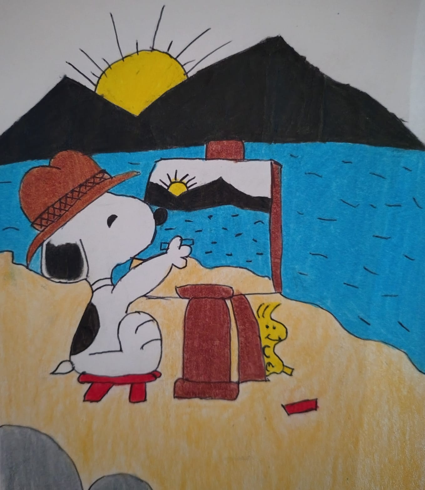
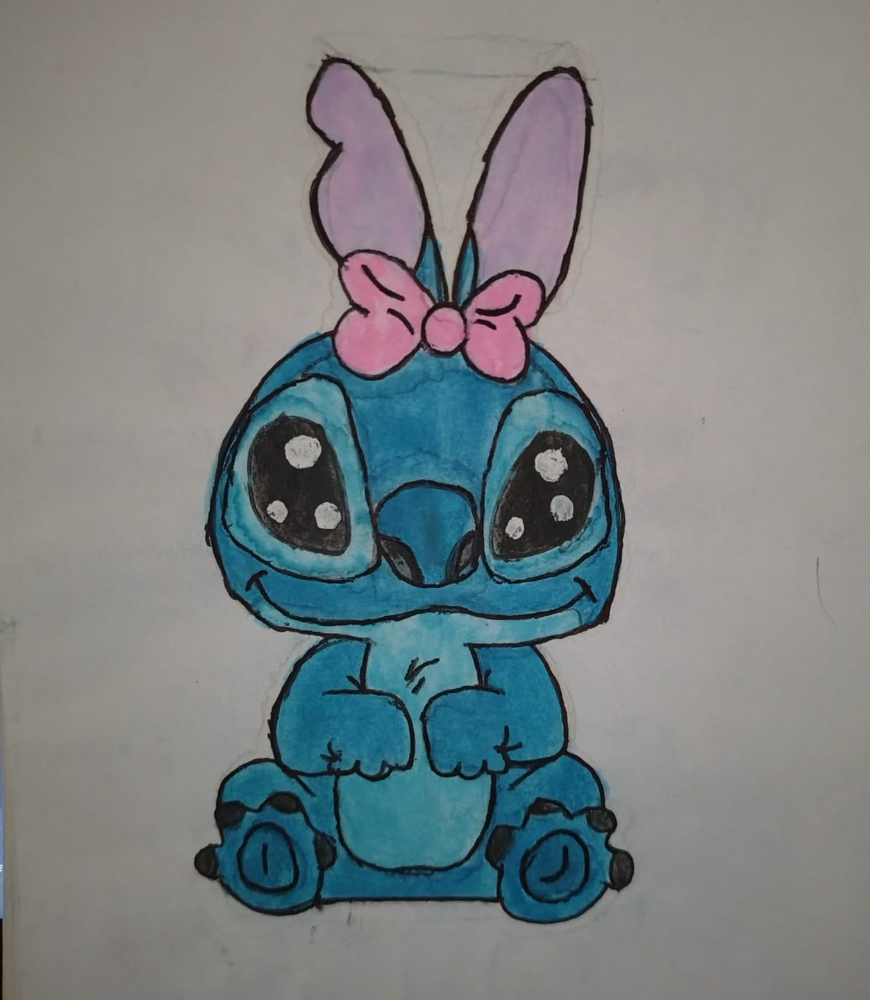
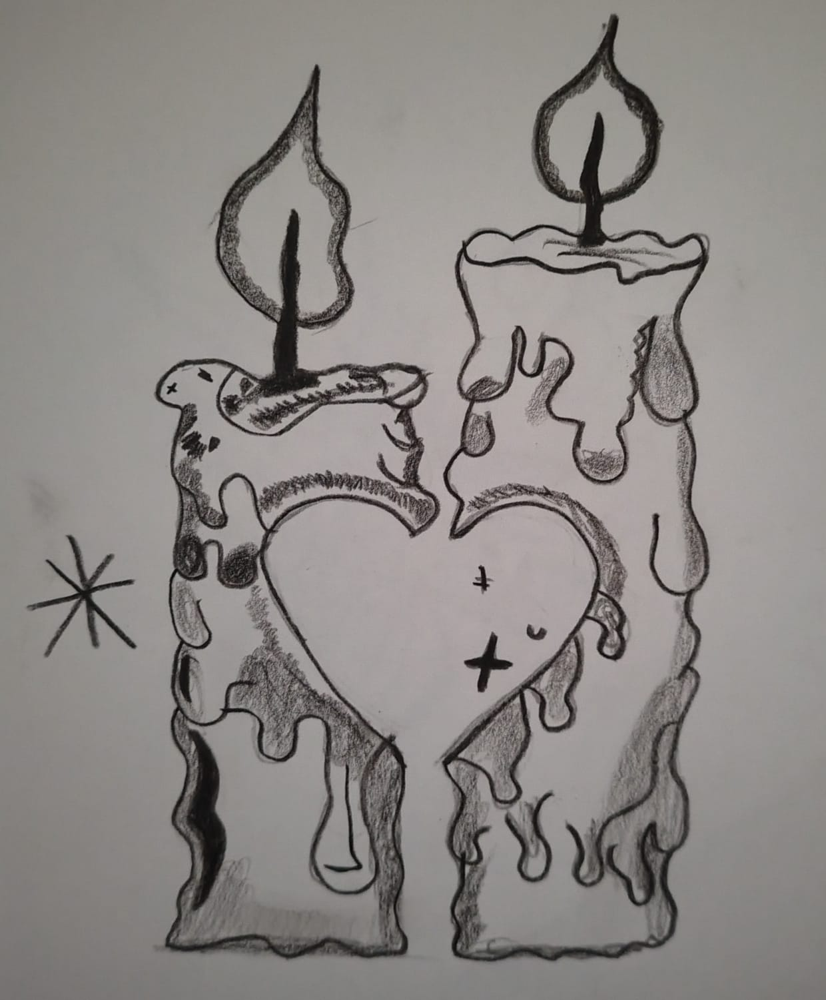

Me gusta dibujar prsonajes que me transmiten gracia. snoopy es uno de mis favoritos por su forma deser

Dibujo a Stitch porque me encanta su personalidad y sus colores. Es un personaje que me transmite mucha alegría y me gusta el reto de hacer sus expresiones tan divertidas.

Me inspiré en unas velas de Pinterest porque me encanta la luz que dan. Dibujarlas me ayuda a practicar las sombras y a crear un ambiente relajado mientras escucho música.